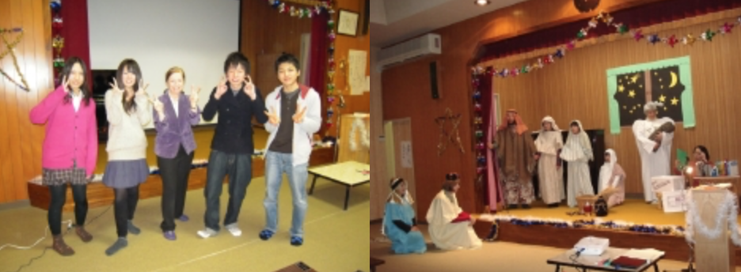

中部エリア Chubu Area
シェカイナ・クリスチャンフェローシップ
(Shekinah Christian Fellowship)
「シェカイナクリスチャンフェローシップ」は「まことに、水が海をおおうように，地は、主の栄光を知ることで満たされる(ハバ2:14)。」という御言葉を信じ、安曇野市もそうなるように熱心に祈っています。
私たちの教会は2001年に設立されました。以来毎週日曜日2時に集まり、リラックスした形で、主への賛美と祈りをささげ、分かち合う時間をもち、聖書からのメッセージを聞き、お互いに祈り合っています。子供の日曜学校もしています。

教会のミニストリーは以下のことが含まれています。
➢若いお母さんたちと子供たちのための「ちびっこのお楽しみ会」
➢「Breakout! ユース」ミニストリー。若者たちのために、海外のホームステイ、安曇野での夏休みキャンプ、金曜日の英会話など定期的に楽しいイベントを行っています。
➢月２回レディーズの聖書の学び、そして個人の聖書の学びもあります。
➢小学生の夏休みプログラム。これは５日間の楽しいプログラムで、活動内容は毎日異なります。
➢祈祷会、英会話、ブライダル、セミナーなども行います。
安曇野市にいらっしゃったらお気軽にご参加ください。
連絡先 Glynis Osborne, Judith Cassell
399-8201 長野県安曇野市三郷明盛 2303-4
Email. glynosbo@yahoo.co.jp
Tel & Fax. 0263-87-0034